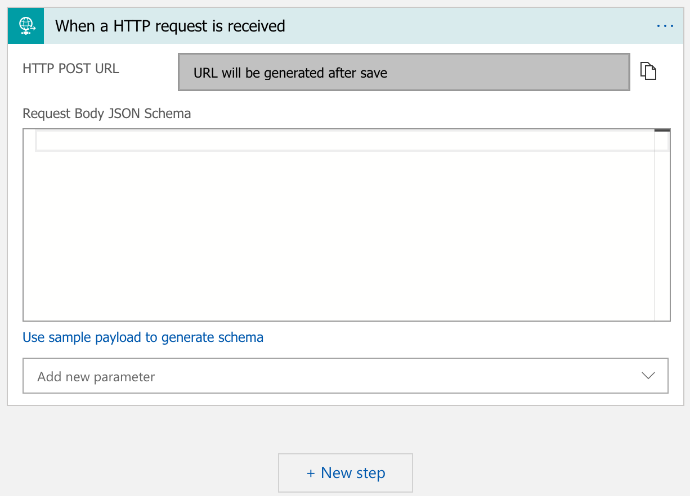
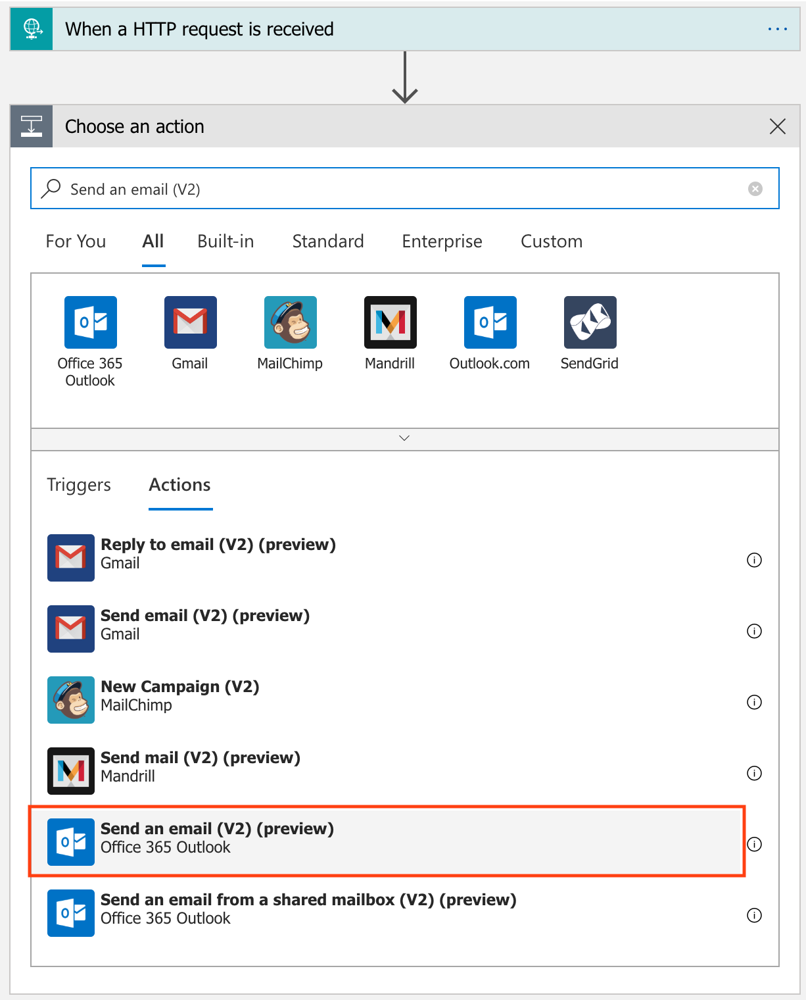
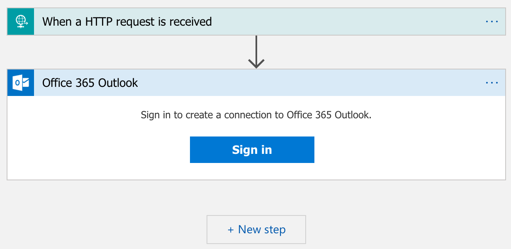
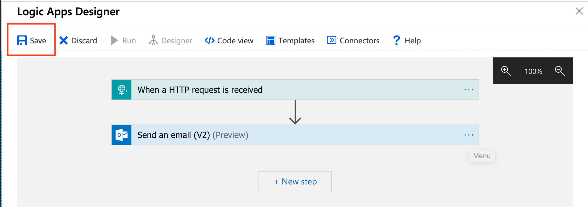
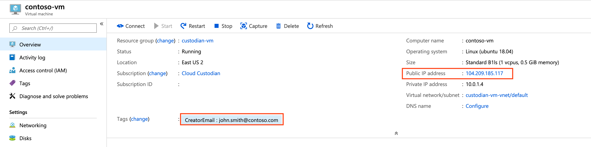

Email - Use Azure Logic Apps to notify users of policy violations {#azure_examples_notifications_logic_app}
Azure Logic Apps are a great option to create simple scalable workflows
in Azure, such as sending an email or posting to Microsoft Teams. In
this example, we will create a workflow that is invoked by Custodian\'s
logic-app <Azure.common.actions.logic-app>{.interpreted-text
role="ref"} action.
Create and configure Azure Logic App
We will now walk through the steps to configure a Logic Apps workflow that will consist of an [Request]{.title-ref} trigger and an [Outlook send email]{.title-ref} action.
Create a new Azure Logic App
- From the main Azure menu, choose Create a resource ─▶ Integration ─▶ Logic App.
- Configure your logic app as shown below. For this example, let\'s name the Logic App custodian-notifications. After you\'re done, hit Create.

- After the Logic App is created, go to the resource and select Blank Logic App under Templates.
Create Request trigger
- Under the Built-in tab, select Request.

- Select When a HTTP request is received. This will setup a HTTP trigger for your Logic App.

Hitting the Save button will generate the URL that will be used to invoke your Logic App.
Create the Outlook Send Email action
- Click the + New Step to create an action to send an email.
- In the search box, search for Send an email (V2). Under the Actions tab, select the Office 365 Outlook action.

- Sign into an Office 365 account to create a connection for your Logic App. This account will be used to send emails once the workflow is invoked.

- Next, customize the email template that will be sent. Go to into the Code View mode by hitting the Code View Button.

- Inside the definition property, update the actions property to look like the following:
"actions": {
"Send_an_email_(V2)": {
"inputs": {
"body": {
"Body": "<p><span style=\"font-size: 16px\"><strong>Policy Name: </strong></span>@{triggerBody()['PolicyName']}<br>\n<span style=\"font-size: 16px\"><strong>Policy Description:</strong></span><strong> </strong>@{triggerBody()['PolicyDescription']}<br>\n<strong><br>\n</strong><span style=\"font-size: 16px\"><strong>Resource</strong></span><strong><br>\n--------------<br>\nName: </strong>@{triggerBody()['Resource']['Name']}<br>\n<strong>Location: </strong>@{triggerBody()['Resource']['Location']}<br>\n<strong>Owner: </strong>@{triggerBody()['Resource']['Owner']}<br>\n<strong>VmSize: </strong>@{triggerBody()['Resource']['VmSize']}<br>\n<br>\n</p>",
"Subject": "Cloud Custodian Policy: @{triggerBody()['PolicyName']}",
"To": "@{triggerBody()['Resource']['Owner']}"
},
"host": {
"connection": {
"name": "@parameters('$connections')['office365']['connectionId']"
}
},
"method": "post",
"path": "/v2/Mail"
},
"runAfter": {},
"type": "ApiConnection"
}
}
- Return back to the Designer mode. The template now appears in the Send an email (V2) action.

- Save the workflow. We now have a Logic App workflow that can be invoked via a HTTP request to send an email with an Office 365 account.

Author Cloud Custodian policy
Let\'s start with an existing policy such as the
Find Virtual Machines with Public IP address <azure_examples_vm_with_public_ips>{.interpreted-text
role="ref"} policy. This policy will find all Azure Virtual Machines
that have public IPs attached to them.
policies:
- name: find-vms-with-public-ips
description: |
VMs should not have public-ips attached to them.
resource: azure.vm
filters:
- type: network-interface
key: properties.ipConfigurations[].properties.publicIPAddress.id
value: not-null
Add Logic App action
Add a logic-app <Azure.common.actions.logic-app>{.interpreted-text
role="ref"} action to the policy to invoke the newly created Logic App.
This action expects a CreatorEmail tag to be added on each resource.
This can be done by Custodian using the
auto-tag-user <azure_examples_autotagusers>{.interpreted-text
role="ref"} policy.
actions:
- type: logic-app
resource-group: cloud-custodian # ─▶ This is the resource group where you created your Logic App
logic-app-name: custodian-notifications # ─▶ This is the name of your Logic App
batch: false # ─▶ We want to invoke the Logic App for each resource that violates our policy
body: > # ─▶ We will select specific properties of our resource that can be used in our Logic App
{
PolicyName: policy.name,
PolicyDescription: policy.description,
Resource: resource.
{
Name: name,
Location: location,
Owner: tags.CreatorEmail, # ─▶ The CreatorEmail tag on the resource will be recipient of the email.
VmSize: properties.hardwareProfile.vmSize
}
}
Final updated policy
policies:
- name: find-vms-with-public-ips
description: |
VMs should not have public-ips attached to them.
resource: azure.vm
filters:
- type: network-interface
key: properties.ipConfigurations[].properties.publicIPAddress.id
value: not-null
actions:
- type: logic-app
resource-group: cloud-custodian
logic-app-name: custodian-notifications
batch: false
body: >
{
PolicyName: policy.name,
PolicyDescription: policy.description,
Resource: resource.
{
Name: name,
Location: location,
Owner: tags.CreatorEmail,
VmSize: properties.hardwareProfile.vmSize
}
}
Test the policy
Policy violating virtual machine
Find a Virtual Machine with a Public IP Address, which is a
violation of the
find-vms-with-public-ips <azure_examples_vm_with_public_ips>{.interpreted-text
role="ref"} policy. Next, either manually add a CreatorEmail tag to
it or execute the
auto-tag-user <azure_examples_autotagusers>{.interpreted-text
role="ref"} policy targeting [Virtual Machine]{.title-ref} resources.

Email sent from logic app
When we execute the policy above, it will invoke the logic-app action, which will result in the following email to be sent: